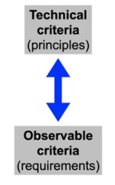
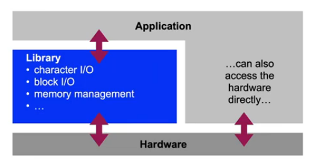
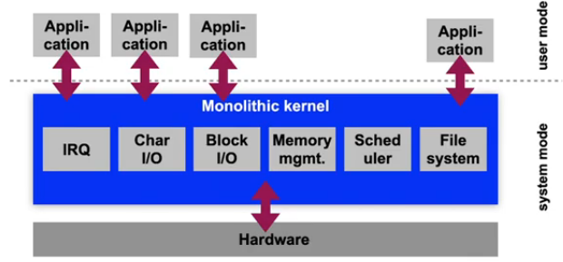
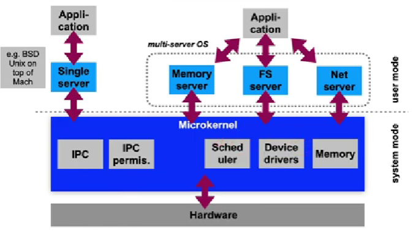
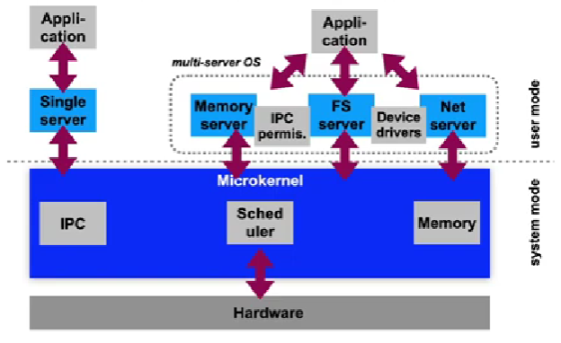
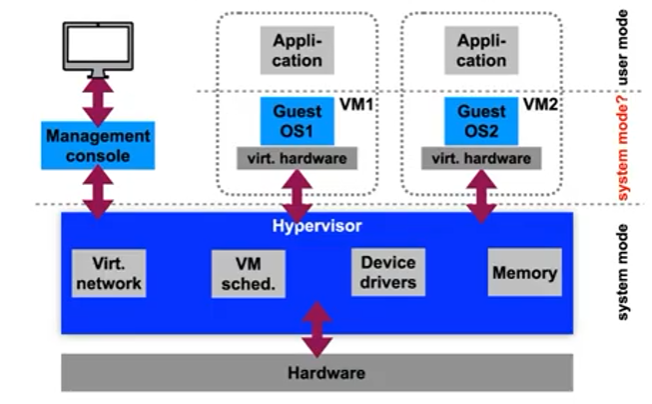
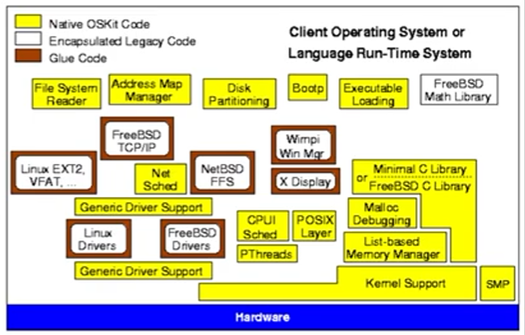

Lecture 17: Virtual machines and microkernels
Exam
Operating system architectures and abstractions
Important questions:
- Can you define monolithic kernels, microkernels, hypervisors?
- Differences between these, pros/cons?
- What problem did first-generation microkernels have?
- How was this solved in second-generation microkernels?
- What is an exokernel?
- What is virtualization, can you define its functionality?
- What is a virtual machine monitor or hypervisor?
- What are the differences between type 1 and 2 hypervisors?
- Which hardware support was introduced to support virtualization?
- What is paravirtualization and what are its pros/cons?
- What is a hypercall?
Software architecture
- Definition:
The basic organization of a system, expressed through its components, their relations to each other and the environment as well as the principles which define the design and evolution of the system. Source: Gesellschaft für Informatik e.V. (https://gi.de/informatiklexikon/software-architektur)
- Intuitive view: "boxes and arrows"
- Does not describe the detailed design
- Focus on the relation between the requirements and the system that is to be constructed
Different operating system architectures
- Isolation
- Interaction mechanisms
- Interrupt handling mechanisms
- Adaptability
- Portability, modifications
- Extensibility
- New functions and services
- Robustness
- Behavior in the presence of errors
- Performance

Early operating systems
- The first computers had no operating system at all
- Every program had to control all hardware on its own
- Systems were running batch processing jobs controlled by an operator
- Single tasking, punch card operated
- Peripheral devices were rather simple
- Tape drives, punch card readers/writers and printers connected over serial lines
- Replication of code to control devices in every application program
- Waste of development and compile time as well as storage
- Error prone
Library operating systems
- Collect frequently used functions to control devices in software libraries which can be used by all programs
- Call system functions like regular program functions
- Library could remain in the computer’s main memory
- Reduced program loading times, "Resident Monitor"
- Library functions were documented and tested
- Reduced development overhead for application programmers
- Errors could be fixed centrally
- Improved reliability
Library operating systems

Library OS: Evaluation
- Isolation
- Ideal – single tasking system – but high time overhead to switch tasks
- Interaction mechanisms
- Direct (function calls)
- Interrupt handling mechanisms
- Sometimes interrupts were not in use → polling
- Adaptability
- Separate libraries for each hardware architecture, no standards
- Extensibility
- Depends on the library structure: global structures, "spaghetti code"
- Robustness
- Direct control of all hardware: errors → system halt
- Performance
- Very high due to direct operations on the hardware without privilege mechanisms
Library OS: Discussion
- Expensive hardware could only be used "productive" for a small fraction of the time
- High overhead to switch tasks
- Waiting for I/O unnecessarily wastes time, since only one "process" runs on the system
- Results took a lot of time
- Waiting queue, batch processing
- No interactivity
- System run by an operator, no direct access to the hardware
- Execution of a program could not be controlled at runtime
Monolithic systems
- Management system for computer hardware
- Standardized accounting of system resources
- Complete control of hard- and software
- Applications run under system control now
- Systems with multiple processes are feasible now: multiprogramming
- Introduction of a privilege system
- System mode and application mode
- Distinction and switch between modes hardware-supported Direct hardware access only in system mode
- System functions called using special mechanisms (software traps)
- Requires context switching and saving
Monolithic operating systems

Monolithic systems: OS/360
- One of the first monolithic systems: IBM OS/360, 1966
- Objective: common batch processing OS for all IBM mainframes
- Performance and memory differ by several orders of magnitude
- System available in different configurations:
- PCP (primary control program): single process, small systems
- MFT (multiprogramming with fixed number of tasks): mid-scale systems (256 kB RAM!), fixed partitioning of memory between processes, fixed number of tasks
- MVT (multiprogramming with variable number of tasks): high end systems, swapping, optional time sharing option (TSO) for interactive use
- Innovative properties:
- Hierarchical file system
- Processes can control sub-processes
- MFT and MVT are compatible (API and ABI)
Monolithic systems: OS/360
- Problems in the domain of operating system development
- Fred Brooks’ "The Mythical Man-Month" described the problems that occurred during the development of OS/360
- Conceptual integrity
- Separation of architecture and implementation was difficult. Developers love to exploit all technical capabilities of a system → reduces comprehensibility and developer productivity
- "Second System Effect"
- Developers wanted to fix all errors of the previous system and add all missing features → never finished
- Dependencies between components of the system were too complex
- Starting with a certain size of the code, errors are unavoidable!
- Developments in software technology were driven by developments in operating systems
Monolithic systems: Unix
- Unix was developed for systems with rather limited resources (AT&T Bell Labs)
- Kernel size in 1979 (7th Edition Unix, PDP11): ca. 10,000 lines of code (straightforward, easy to handle!), compiled ca. 50 kB
- Originally implemented by 2-3 developers
- Introduction of simple abstractions
- Every object in the system can be represented as a file
- Files are simple unformatted streams of bytes
- Complex functionality can be realized by combining simple system programs (shell pipelines)
- New objective of system development: portability
- Simple adaptability of the system to different hardware
- Development of Unix in C – designed to be a domain specific language to develop operating systems
Monolithic systems: Unix
- Further development of Unix was not predictable
- Systems with large address spaces (VAX, RISC systems)
- The Unix kernel also grew in size (System III, System V, BSD) – without significant structural changes
- Very complex subsystems were integrated along the way
- TCP/IP was about as complex as the rest of the kernel
- Linux was modelled after the structure of System V Unix
- Impact in academia: "Open Source" policy of Bell Labs
- Weaknesses of Unix lead to new research questions
- However, many projects (e.g. Mach) tried to remain compatible to Unix
Monolithic systems: Evaluation
- Isolation
- No isolation of components in kernel mode, only between application processes
- Interaction mechanisms
- Direct function calls (in the kernel), Traps (application – kernel)
- Interrupt handling mechanisms
- Direct handling of hardware interrupts by IRQ handlers
- Adaptability
- Changes in one component influence other components
- Extensibility
- Originally: recompilation required; today: kernel module system
- Robustness
- Bad – an error in one component "kills" the complete system
- Performance
- High – few copy operations required, since all kernel components use the same address space. System calls require a trap, however
Monolithic systems: Discussion
- Complex monolithic kernels are difficult to work with
- Adding or changing functionality often involves more modules than the developer intended
- Shared address space
- Security problems in one component (e.g. buffer overflows) compromise the complete system
- Many components unnecessarily run in system mode
- Reduced number of options for synchronization
- Often only a "Big Kernel Lock", i.e. only a single process, can run in kernel mode at a time, all others have to wait
- This is especially bad for the performance of multiprocessor systems
Microkernel systems
- Objective: reduction of the Trusted Computing Base (TCB) size
- Minimize functionality running in the privileged mode of the CPU
- Isolate all other components against each other in non privileged mode
- Principle of least privilege
- System functions are only allowed to have the privileges required to complete their task
- System calls and communication between processes using message passing (IPC – inter process communication)
- Reduced functionality in the microkernel
- Lower code size (10,000 lines of C++ code in L4 vs. 5.5 million lines of C in Linux without device drivers)
- Allows for formal verification of the microkernel (seL4)
First-generation microkernels
- Example: CMU Mach
- Initial idea: Separation of the features of (BSD) Unix into features requiring execution in the privileged mode of a CPU and all other features
- Objective: Creation of an extremely portable system
- Improvements to Unix concepts
- New communication mechanisms using IPC and ports
- Ports are secure IPC communication channels
- IPC is optionally network transparent: support for distributed systems
- Parallel activities inside of a single process address space
- Support for threads → processes are now "containers" for threads
- Better support for multiprocessor systems
- New communication mechanisms using IPC and ports
First-generation microkernels

First-generation microkernels
- Problems of Mach:
- High overhead of IPC operations
- System calls are a factor of 10 slower compared to a monolithic kernels
- Sub-optimal decisions about which components should be implemented in the microkernel: large code base
- Device drivers and permission management for IPC in the microkernel
- Resulted in a bad reputation of microkernels in general
- Practical usability was questioned
- High overhead of IPC operations
- The microkernel idea was dead in the mid 1990s
- Practical use of Mach mostly in hybrid systems
- Separately developed components for microkernel and server
- Colocation of the components in one address space, replacing of inkernel IPC by function calls
- Apple macOS: Mach 3 microkernel base + FreeBSD components
Second-generation microkernels
- Objective: Remove disadvantages of first generation microkernels
- Optimization of IPC operations
- Jochen Liedtke: L4 (1996)
- A concept is tolerated inside of a microkernel only if moving it outside of the kernel would prevent the implementation of functionality required in the system
- Four basic mechanisms:
- Abstraction of address spaces
- A model for threads
- Synchronous communication between threads
- Scheduling
- Much of the functionality implemented in kernel mode in first generation microkernels now runs in user mode
- e.g. checking of IPC communication permissions
Second-generation microkernels

Microkernel OS: Evaluation
- Isolation
- Very good – separate address spaces for all components
- Interaction mechanisms
- Synchronous IPC
- Interrupt handling mechanisms
- The microkernel translates interrupts into IPC messages
- Adaptability
- Originally hard to adapt – x86 assembler code, today in C/C++
- Extensibility
- Very good and simple as components in user mode
- Robustness
- Good – but dependent on the robustness of user mode components
- Performance
- In general depending on the IPC performance
Exokernel OS: Even smaller…
- Idea to simplify the OS even further:
- The lowest system software layers does not implement strategies or abstractions and does also not virtualize resources
- One single task: resource partitioning
- Every application is assigned its own set of resources
- The assignment is enforced by the exokernel
- Everything else is implemented according to demand using application-specific library operating systems inside of resource containers
- Problem: Library operating systems are specific to the respective exokernel
Virtualization
- Objective: Isolation and multiplexing of resources below the operating system layer
- Simultaneous use of multiple guest operating systems
- Virtual machines (VMs) on system level virtualize hardware resources such as:
- Processor(s), main memory and mass storage resources, peripheral devices
- A virtual machine monitor (VMM) or hypervisor is the software component that provides the virtual machine abstraction
Virtualization: IBM VM
- IBM S/360 mainframes: many different operating systems
- DOS/360, MVS: batch processing library operating systems
- OS/360+TSO: Interactive multi user system
- Customer-specific extensions
- Problem: How to use all systems simultaneously?
- Hardware was expensive (millions of US$)
- OS expect to have control over the complete hardware → This illusion has to be maintained for every OS
- Development of the first system virtualisation "VM" as a combination of emulation and hardware support
- Enabled simultaneous operation of batch processing and interactive operating systems
Virtualization with a type 1 hypervisor

Hardware-supported virtualization
- Example x86: Privileged instructions in ring 0 can be caught
- Intel "Vanderpool" (Intel VT-x), AMD "Pacifica" (AMD-V)
- Additional logical privilege mode: often called "ring -1"
- Guest OS kernel runs in ring 0 as before
- "Critical" instructions in ring 0:
- Trap to the hypervisor
- The hypervisor emulates critical instructions
- or stops the OS using them (if not permitted)
- Allows to use multiple completely unchanged OS instances on a single hardware system at the same time
- Peripheral devices of the respective VMs still have to be emulated, since the virtualized systems are not aware of the presence of the other OSes
Paravirtualization
- Applications of the virtualized OS run unchanged, but the virtualized OS itself requires a special kernel
- Guest kernel runs (on x86) in a protection ring > 0 (e.g. ring 3)
- not in system mode
- Realization:
- "critical" instructions (interrupt handling, memory management, etc.) in the guest kernel are replaced by hypercalls (explicit calls to the hypervisor)
- VMware approach: kernel binary code is adapted when loading the guest OS
- Xen approach: modification of the OS source code
- Performance improvement: Hypercalls also used to access peripherals and the network – no more slow hardware emulation required
- "critical" instructions (interrupt handling, memory management, etc.) in the guest kernel are replaced by hypercalls (explicit calls to the hypervisor)
Virtualization: Evaluation
- Isolation
- Very good – but coarse granularity (between VMs)
- Interaction mechanisms
- Communication between VMs only via TCP/IP (virtual network cards!)
- Interrupt handling mechanisms
- Forwarding of IRQs to guest kernel inside of the VM (simulated hardware interrupts)
- Adaptability
- Specific adaptation for a CPU type required, paravirtualization has a lot of overhead
- Extensibility
- Difficult – not commonly available in VMMs
- Robustness
- Good – but coarse granularity (whole VMs affected by crashes)
- Performance
- Good – 5-10% lower compared to direct execution on the same hardware
Libraries of OS functionality
- "Unikernels" are used to efficiently execute a single application inside of a virtual machine
- mirageOS, Mini-OS, Unikraft, …
- Example: Utah OSKit
- "best of" of different operating system components
- Interfaces adapted to conform to a single standard
- Language support (interface generator) enables easy integration of components

OS architectures: Conclusion
- OS architectures are still a current area of research
- "old" technologies such as virtualization find new applications today, e.g. in cloud computing
- Hardware and applications change all the time, e.g.
- Energy awareness (energy harvesting)
- Scalability (multi-/manycore processors)
- Heterogeneity (ARM big.LITTLE, GPUs, ...)
- Adaptability (mobile systems, resource constrained systems)
- Persistent main memories (TI FRAM, Intel DCPMMs)
- Compatibility requirements and high development costs prevent the fast acceptance of new developments
- Virtualization is used as compatibility layer